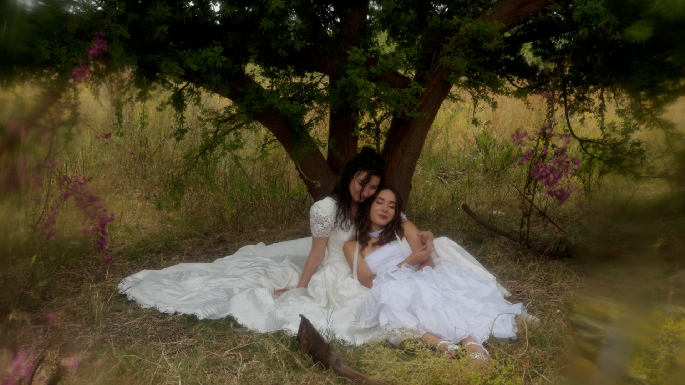
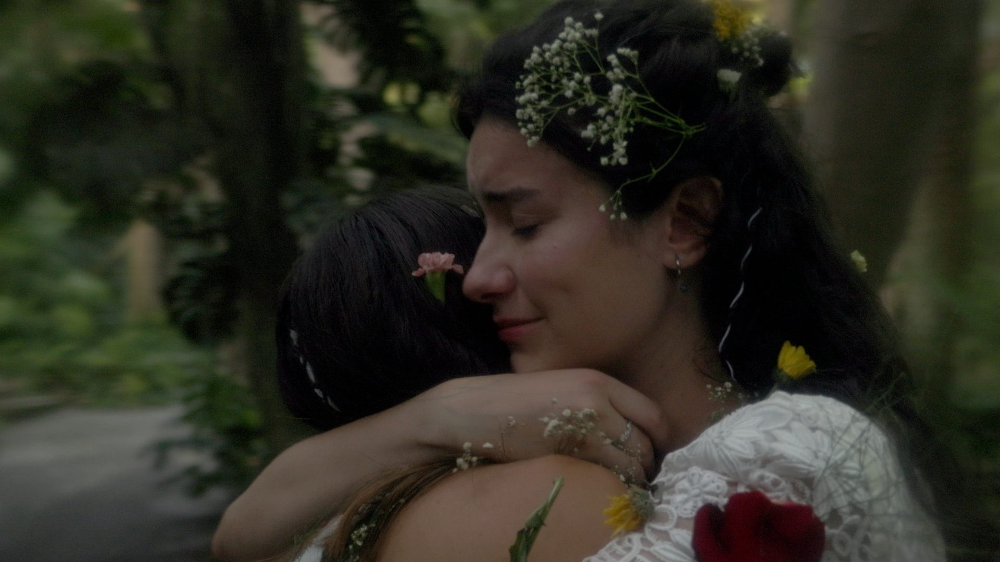
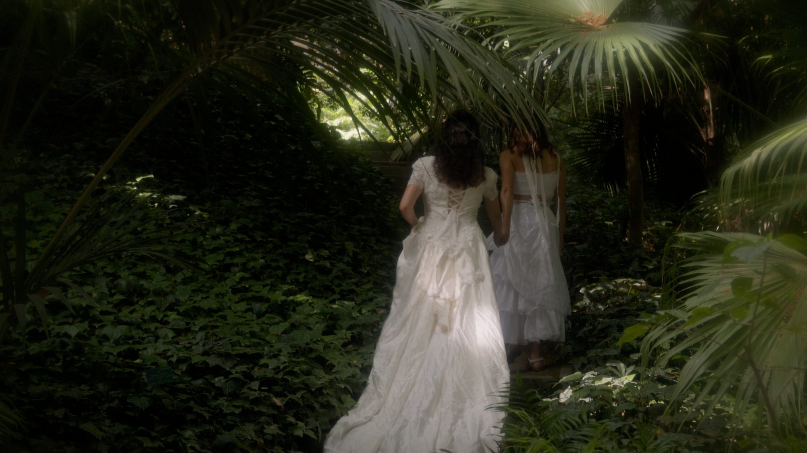
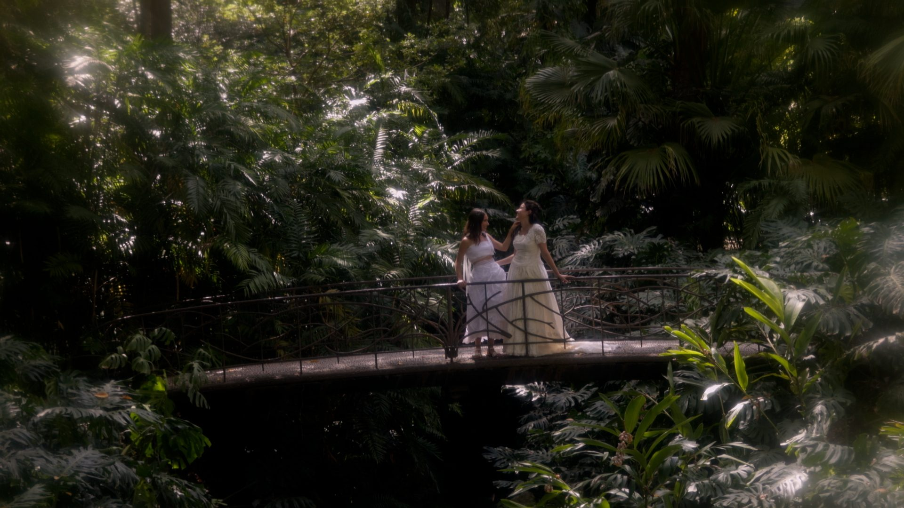
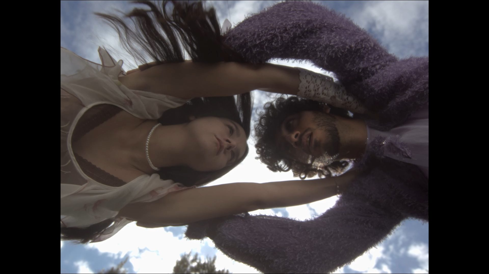
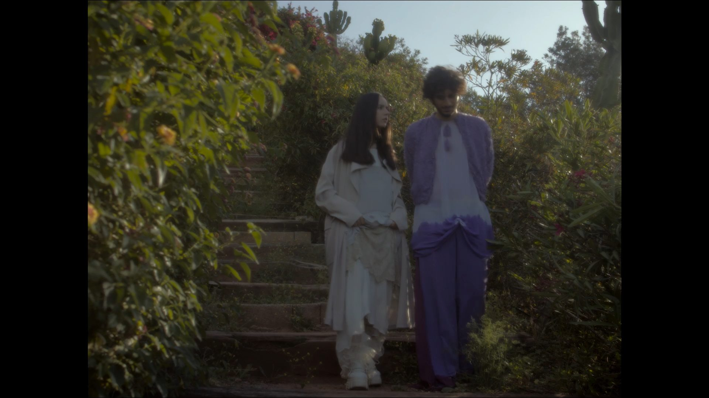
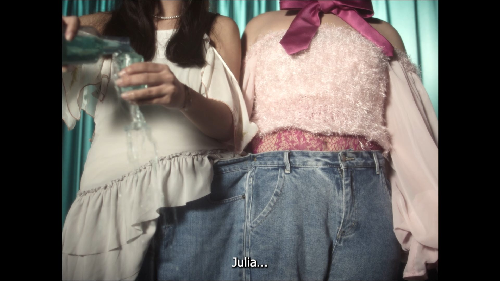
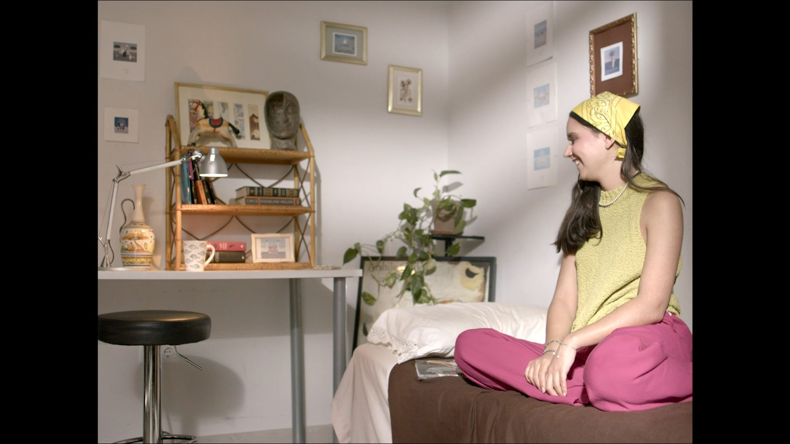

Waltz to my 宝贝
Dirección de fotografía y etalonaje
NVOH · La Colisión
Proyectos
Pasa el carrusel y abre cualquier pieza para verla en detalle. Debajo está la filmografía completa con el puesto ocupado en cada rodaje.
Dirección de fotografía y etalonaje
NVOH · La Colisión
Idea original · Dirección de fotografía · Etalonaje
La Colisión
Dirección de fotografía y etalonaje
4 fotogramas dentro
Cortometraje ganador
Auxiliar de cámara
Festival de Cortometrajes de La Viñuela
Auxiliar de cámara
2 fotos de rodaje dentro
Dirección de fotografía y cámara
Ismael Moreno · La Colisión
Dirección de fotografía y cámara
La Instantánea
Dirección de fotografía y cámara
La Instantánea · II Edición CAVCREA
Gaffer
Jacquelin Adames
Mara Ruiz Mejías
Trayectoria
Diecisiete rodajes desde 2022. Las obras con ficha propia se abren al pulsar.
Detrás de cámara
El trabajo en set: cámara en mano, equipo y claqueta.








Sin vídeo publicado todavía.
Ganador del Festival de Cortometrajes de La Viñuela
Las fotos de este rodaje están en la sección «En rodaje».